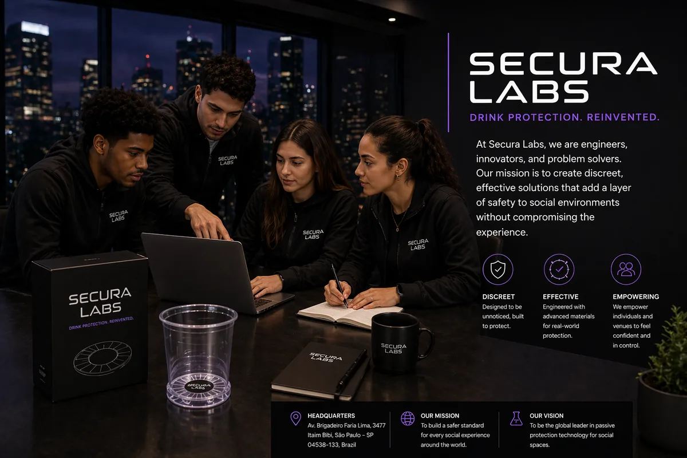

Founded in São Paulo
SecuraLabs is a safety technology company founded in 2023 by Ari, Marcus, and Jabari after their time at LifePrep Academy. The company began after conversations around real drink-adulteration incidents made one gap clear: most existing tools depend on people noticing danger in the exact environments where awareness is hardest to maintain.
Ki-Liner grew from that insight. Instead of asking people to test a drink after concern appears, SecuraLabs is developing embedded drinkware protection that works quietly inside everyday hospitality settings.

Founded in São Paulo, Brazil, with a global hospitality problem in mind.
Nanosensor-based detection paired with a responsive material barrier concept.
A B2B rollout strategy for bars, universities, restaurants, and large-scale event venues.
Our Mission
SecuraLabs is focused on moving drink safety beyond after-the-fact testing. The goal is to embed safety directly into drinkware systems so protection can become part of the normal service flow.
The company designs for environments where speed, volume, and trust matter: nightlife, campuses, airlines, festivals, and hospitality operations using standard cup formats.
Leadership Blend
Ari, CEO: leads company direction, partnerships, and commercial growth.
Marcus, CTO: brings biotechnology and nanosensor research into product development.
Jabari, COO: focuses on operations, deployment, and scalable venue integration.
Where We Are Going
SecuraLabs plans to expand Ki-Liner across product formats, beverage conditions, and hospitality partnerships while continuing research and development around performance, usability, and scalable manufacturing.
Standard and Thermal versions for cold and elevated-temperature beverages.
Built for high-volume service environments and institutional ordering.
Manufacturer, distributor, and hospitality relationships support market expansion.
Validation, documentation, and implementation planning remain part of commercial adoption.
Expansion Roadmap
SecuraLabs is building around a broader platform idea: safety-focused materials that can integrate into drinkware, hospitality surfaces, and packaging systems. These concepts are positioned as future development directions, not current checkout products.
Next-gen liner
A future liner concept focused on faster response, broader beverage compatibility, and easier venue integration.
Material platform
Smart surface applications for counters, trays, packaging, and service environments where contamination awareness matters.
Venue systems
Reusable cups and glassware concepts for hospitality groups that want embedded safety as part of service operations.
Institutional rollout
Packaging formats for campuses, airlines, festivals, and food-service operations with high-volume safety requirements.